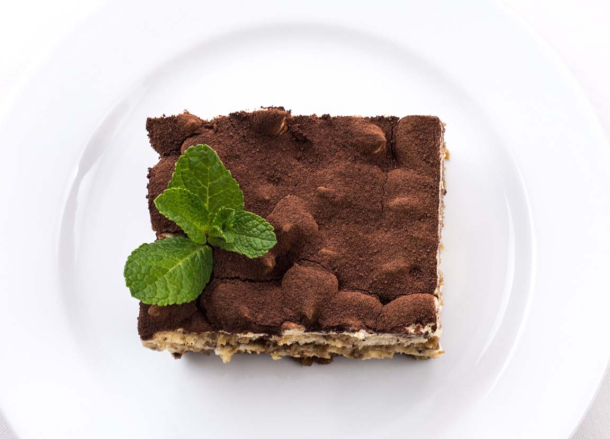
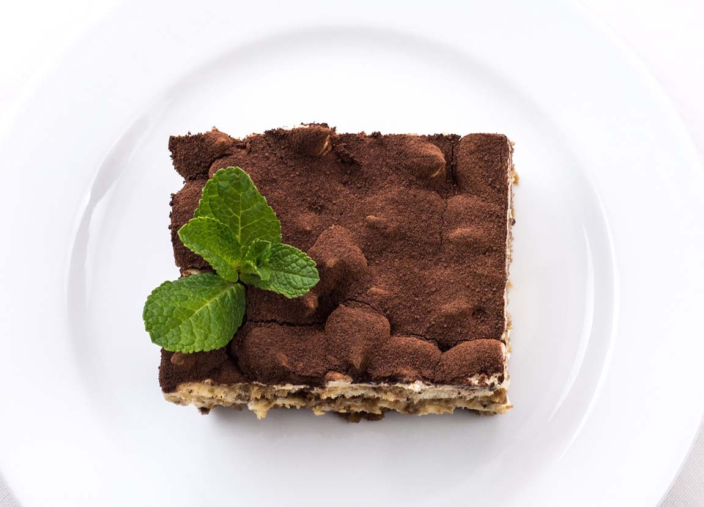

Kultur
Kunst
Italien hatte und hat weiterhin viele berühmte Künstler für die unterschiedlichsten Zeiten! Ein paar der bedeutendsten Künstler der Renaissanche waren:
- Raffaelo Santi. Er war Maler in Florenz und sogar am päpstlichen Hof und er war auch Bauleiter des berühmten Peterdoms. Sein berühmtester Werk ist "Die Schule von Athen", welches in der Stanza delle Segnature im Vatikan aufbewahrt wird. Sein Selbstporträt, welches zwischen 1504 und 1506 datiert wird, ist auch sehr berühmt.
- Ein anderer sehr bekannter Künstler war Leonardo da Vinci. Er war mehr als nur Maler; er war auch Ingenieur, Wissenschaftler, Theoretiker, Bildhauer und Architekt. Sein berühmtester Werk ist die "Mona Lisa", die heutzutage so gut wie jeder kennt. Eine andere berühmte Wandmalerei ist "Das Abendmahl".
- Michelangelo (di Lodovico Buonarroti Simoni) war auch sehr berühmt und war auch nicht nur Maler, sondern auch Architekt, Dichter und Bildhauer. Zu seinen berühmtesten Werken gehören "Der David von Michelangelo", die erste Monumentalstatue der Hochrenaissance und "Die Erschaffung Adams", eine Fresko.


Architektur
Es gab auch viele wichtige und berühmte Architekten und Architektur in Italien.
Andrea Palladio (Andrea di Pietro), war der wichtigste Architekt der norditalienischen
Renaissanche. Sein Vorbild war die Baukunst des antiken Roms. Berühmt sind seine "Villa Rotonda"
am Stadtrand von Vincenza und auch "Der Justizpalast" in der Piazza dei Signori in Vicenza.
In Apulien gibt es auch "Das Castel del Monte", um 1240-1250 gebaut. Es hat eine achteckige
Form mit ebenfalls acht achteckigen Türmen und einem achteckigen Innenhof, hat keinen architektonischen
Vorbild und diese Form wurde auch nie mehr angewandt. Es gehört seit 1996 zum UNESCO-Welterbe.
Das Kolosseum ist eines der berühmtesten Strukturen Italiens und befindet sich im Rom. Es ist das
größte im antiken Rom erbaute Amphitheater, und auch das größte der Welt. Es diente in der Antike
als Austragungsort grausamer Veranstaltungen, jetzt ist die Ruine des Bauwerks eines der Wahrzeichen
der Hauptstadt Rom.


Essen
Wir können selbstverständlich nicht die italienische Cuisine vergessen. Die italienische Küche ist eines der berühmtesten Teile der Kultur. Sehr berühmt sind Pasta und Pizza, aber es gibt viel mehr als nur das. Zu berühmten Gerichten gehören auch: Risotto, ein Gericht aus Reis; Gnocchi, Teigwaren aus (meistens) Kartoffeln; Lasagne, Auflauf aus mehreren Teigschichten (Nudelblätter); Gelato, also Speiseeis; Polenta, ein fester Brai aus Maisgrieß; Arancini und Suppli, beide frittierte und gefüllte Reisbällchen, wobei sie aus ein bisschen unterschiedlichen Füllungen bestehen; Panzerotto fritto, sie sind grob beschrieben Pizzataschen; Tiramisù, ein leckeres Dessert aus Schichten von Löffelbiskuits und einer Creme aus Mascarpone, Eigelb und Zucker; und vieles, vieles mehr.

 
